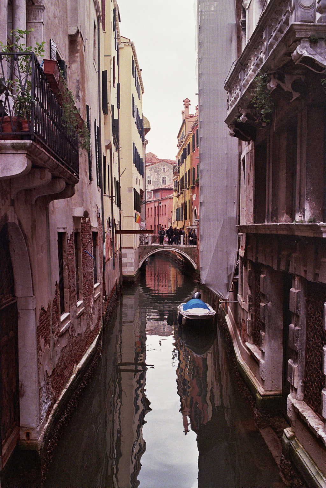
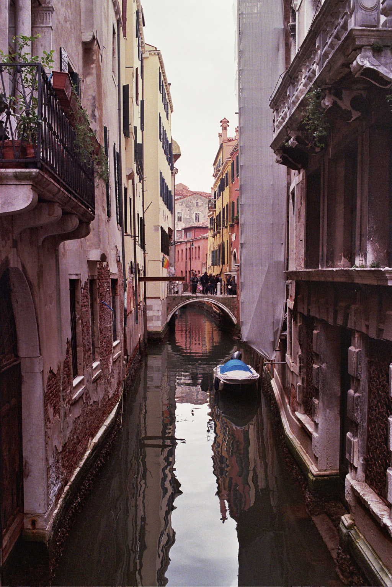

Film
These photos were taken on my late Grandfather's Nikon f601. It's not the most spectacular camera but I like using it knowing my Dad and his Dad used it too. Some of these are my favourites I've taken, although it helps I took them most recently. I enjoy that I have to think carefully before I shoot. Hover to enlarge.
 
